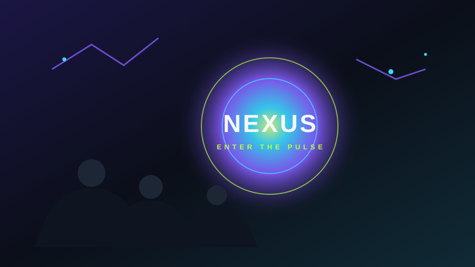
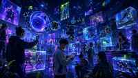
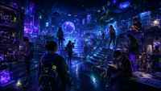

Transforma algo que ya tenías.
Un tenis, una camiseta, una libreta o un objeto cotidiano. Haz una intervención creativa y conviértelo en pieza de galería.

Una plataforma juvenil donde los videojuegos, la moda, los hobbies, el arte y las tendencias se convierten en una experiencia inmersiva.
Gaming social, estéticas urbanas, cultura visual, creación digital y microhobbies reunidos en una sola narrativa visual.
Cada sección introduce un mundo distinto, pero todos comparten el mismo lenguaje: atmósfera nocturna, cultura digital, juventud creativa y energía cinematográfica.
El mundo gaming debe sentirse vivo: pantallas, arena digital, juego compartido y pulsación colectiva. Aquí nacen las votaciones, los rankings y los retos competitivos.
No se trata solo de ropa. Se trata de actitud, códigos visuales, sneakers, accesorios, peinados y perfiles estéticos que definan a la comunidad.
Esta escena convierte la página en un lugar de producción real: ilustración, arte digital, video, escultura, música y procesos creativos visibles.

El radar de tendencias necesita saturación visual controlada: noticias rápidas, referencias cruzadas, fenómenos virales y contenido que cambia con frecuencia.
El espacio de descubrimiento debe provocar exploración. Hobbies, objetos, colecciones, rutas de interés y mundos para usuarios que quieren algo más que consumir contenido rápido.

Un tenis, una camiseta, una libreta o un objeto cotidiano. Haz una intervención creativa y conviértelo en pieza de galería.
Elige una opción para activar el pulso demo.
Ese vacío puede convertirse en un proyecto, una colección, un reto o una nueva obsesión creativa.
Selecciona una ruta y aparece una sugerencia inicial.